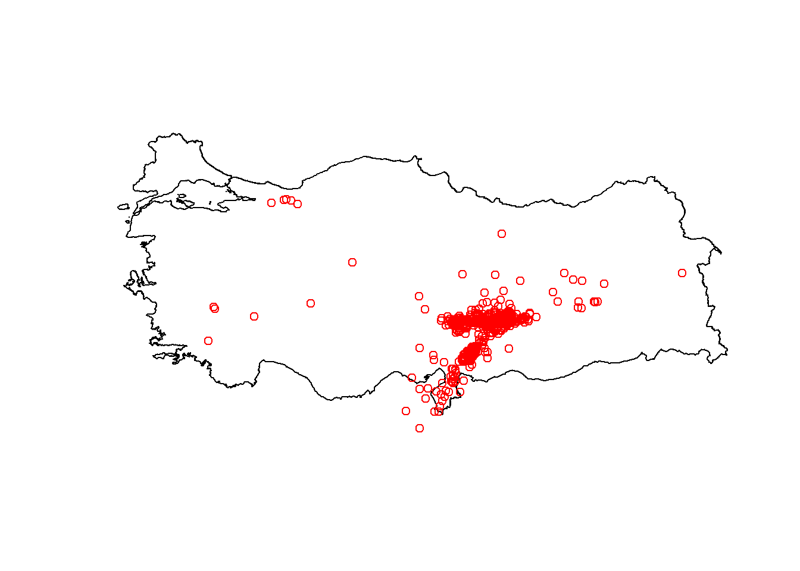
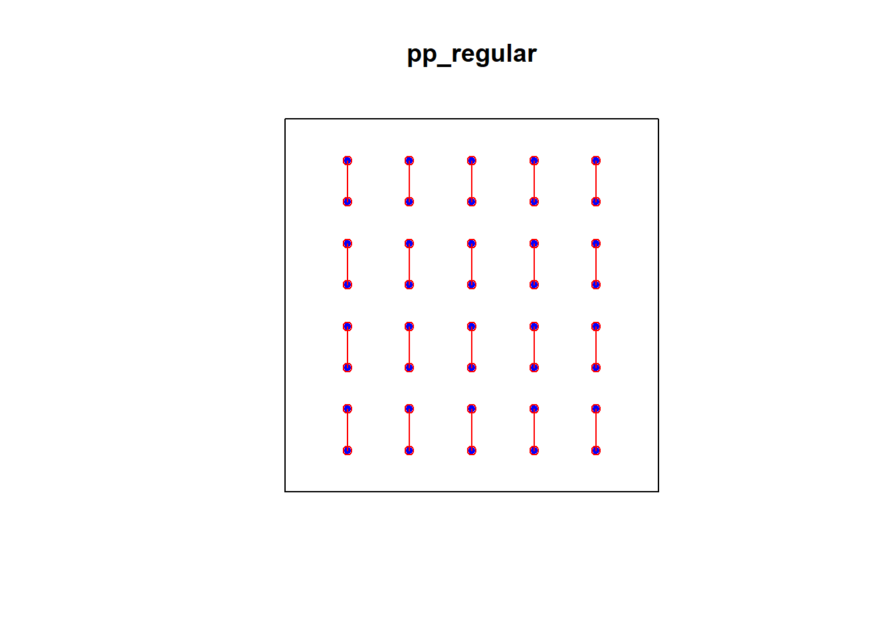
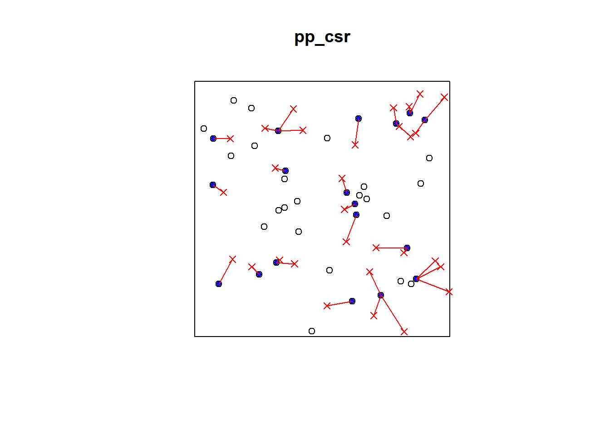

Chapter 2 Spatial Point Pattern Analysis
2.1 Prerequisites
You need to have the following R packages installed and recalled into your library:
2.2 Datasets - Readily Available, Imported, Simulated Datasets
2.2.1 Swedishpines Dataset from spatstat.data library
## [1] "ppp"## Planar point pattern: 71 points
## Average intensity 0.7395833 points per square metre
##
## Coordinates are given to 1 decimal place
## i.e. rounded to the nearest multiple of 0.1 metres
##
## Window: rectangle = [0, 9.6] x [0, 10] metres
## Window area = 96 square metres
## Unit of length: 1 metre
2.2.2 Clinics Dataset Using Simple Features (SF)
Download the data from the following:
https://web1.capetown.gov.za/web1/OpenDataPortal/DatasetDetail?DatasetName=Clinics
Extract the data frame into R:
library(sf)
clinics_sf = st_read("C:/Users/01438475/Google Drive/UCTcourses/ASDA/DataSets/Clinics/SL_CLNC.shp")## Reading layer `SL_CLNC' from data source `C:\Users\01438475\Google Drive\UCTcourses\ASDA\DataSets\Clinics\SL_CLNC.shp' using driver `ESRI Shapefile'
## Simple feature collection with 149 features and 5 fields
## geometry type: POINT
## dimension: XY
## bbox: xmin: 18.34268 ymin: -34.19491 xmax: 18.90847 ymax: -33.51262
## geographic CRS: WGS 84## Simple feature collection with 149 features and 5 fields
## geometry type: POINT
## dimension: XY
## bbox: xmin: 18.34268 ymin: -34.19491 xmax: 18.90847 ymax: -33.51262
## geographic CRS: WGS 84
## First 10 features:
## LCTN ATHY
## 1 C/O Adam/ Liedeman Street Mamre PAWC
## 2 Cnr Hermes & GrosvenorAve CITY OF CAPE TOWN
## 3 Hassen Kahn Ave Rusthof Strand PAWC
## 4 61 Central Circle, Fish Hoek CITY OF CAPE TOWN
## 5 Simon Street, Nomzamo CITY OF CAPE TOWN
## 6 C/O Musical and Hospital Street Macassar PAWC
## 7 28 Church Street Somerset West CITY OF CAPE TOWN
## 8 Fagan Street Strand CITY OF CAPE TOWN
## 9 Karbonkel Road, CMC Building, Hout Bay PAWC
## 10 Midmar Street Groenvallei CITY OF CAPE TOWN
## NAME CLASS RGN
## 1 MAMRE CDC Community Day Centre Western
## 2 SAXON SEA CLINIC Clinic Western
## 3 GUSTROUW CDC Community Day Centre Eastern
## 4 FISH HOEK CLINIC Clinic Southern
## 5 IKWEZI CDC Community Day Centre Eastern
## 6 MACASSAR CDC Community Day Centre Eastern
## 7 SOMERSET WEST CLINIC Clinic Eastern
## 8 FAGAN STREET SATELLITE Satellite Eastern
## 9 HOUT BAY HARBOUR CDC Community Day Centre Southern
## 10 GROENVALLEI SATELLITE Satellite Tygerberg
## geometry
## 1 POINT (18.47692 -33.51262)
## 2 POINT (18.48881 -33.55012)
## 3 POINT (18.85211 -34.13472)
## 4 POINT (18.42632 -34.13669)
## 5 POINT (18.86622 -34.11375)
## 6 POINT (18.76369 -34.06105)
## 7 POINT (18.84814 -34.08579)
## 8 POINT (18.82979 -34.1162)
## 9 POINT (18.34268 -34.0549)
## 10 POINT (18.66701 -33.89165)## [1] "sf" "data.frame"## LCTN ATHY NAME CLASS
## Length:149 Length:149 Length:149 Length:149
## Class :character Class :character Class :character Class :character
## Mode :character Mode :character Mode :character Mode :character
## RGN geometry
## Length:149 POINT :149
## Class :character epsg:4326 : 0
## Mode :character +proj=long...: 0


2.3 Plotting Datasets

2.3.2 Basic ggplot() function - (sf) object
2.3.3 ggplot() function with a bounding box - (sf) object
library(ggplot2)
plot2 = ggplot() +
geom_sf(data = clinics_sf, size = .8, color = "black") +
ggtitle("Location of Cape Town clinics - 2016") +
coord_sf(xlim = c(18.34, 18.91), ylim = c(-34.19, -33.51262)) +
theme(panel.grid.major = element_blank(),
panel.grid.minor = element_blank(),
panel.background = element_rect(colour = "black", size=1, fill=NA))
plot2
2.3.4 ggplot() with Electoral Wards Shape File
In order to plot using the electoral wards polygons, we need the sf data frame to be converted into Spatial Points Data Frame (sp).
## [1] "SpatialPointsDataFrame"
## attr(,"package")
## [1] "sp"Download the CPT electoral wards and import the shape file as follows:
library(sf)
ct.wards_sf = st_read("C:/Users/01438475/Google Drive/UCTcourses/ASDA/DataSets/sa/CPT/electoral wards for cpt.shp")## Reading layer `electoral wards for cpt' from data source `C:\Users\01438475\Google Drive\UCTcourses\ASDA\DataSets\sa\CPT\electoral wards for cpt.shp' using driver `ESRI Shapefile'
## Simple feature collection with 111 features and 9 fields
## geometry type: MULTIPOLYGON
## dimension: XY
## bbox: xmin: 18.30722 ymin: -34.35834 xmax: 19.00467 ymax: -33.47128
## CRS: NA## [1] MULTIPOLYGON MULTIPOLYGON MULTIPOLYGON MULTIPOLYGON MULTIPOLYGON
## [6] MULTIPOLYGON MULTIPOLYGON MULTIPOLYGON MULTIPOLYGON MULTIPOLYGON
## [11] MULTIPOLYGON MULTIPOLYGON MULTIPOLYGON MULTIPOLYGON MULTIPOLYGON
## [16] MULTIPOLYGON MULTIPOLYGON MULTIPOLYGON MULTIPOLYGON MULTIPOLYGON
## [21] MULTIPOLYGON MULTIPOLYGON MULTIPOLYGON MULTIPOLYGON MULTIPOLYGON
## [26] MULTIPOLYGON MULTIPOLYGON MULTIPOLYGON MULTIPOLYGON MULTIPOLYGON
## [31] MULTIPOLYGON MULTIPOLYGON MULTIPOLYGON MULTIPOLYGON MULTIPOLYGON
## [36] MULTIPOLYGON MULTIPOLYGON MULTIPOLYGON MULTIPOLYGON MULTIPOLYGON
## [41] MULTIPOLYGON MULTIPOLYGON MULTIPOLYGON MULTIPOLYGON MULTIPOLYGON
## [46] MULTIPOLYGON MULTIPOLYGON MULTIPOLYGON MULTIPOLYGON MULTIPOLYGON
## [51] MULTIPOLYGON MULTIPOLYGON MULTIPOLYGON MULTIPOLYGON MULTIPOLYGON
## [56] MULTIPOLYGON MULTIPOLYGON MULTIPOLYGON MULTIPOLYGON MULTIPOLYGON
## [61] MULTIPOLYGON MULTIPOLYGON MULTIPOLYGON MULTIPOLYGON MULTIPOLYGON
## [66] MULTIPOLYGON MULTIPOLYGON MULTIPOLYGON MULTIPOLYGON MULTIPOLYGON
## [71] MULTIPOLYGON MULTIPOLYGON MULTIPOLYGON MULTIPOLYGON MULTIPOLYGON
## [76] MULTIPOLYGON MULTIPOLYGON MULTIPOLYGON MULTIPOLYGON MULTIPOLYGON
## [81] MULTIPOLYGON MULTIPOLYGON MULTIPOLYGON MULTIPOLYGON MULTIPOLYGON
## [86] MULTIPOLYGON MULTIPOLYGON MULTIPOLYGON MULTIPOLYGON MULTIPOLYGON
## [91] MULTIPOLYGON MULTIPOLYGON MULTIPOLYGON MULTIPOLYGON MULTIPOLYGON
## [96] MULTIPOLYGON MULTIPOLYGON MULTIPOLYGON MULTIPOLYGON MULTIPOLYGON
## [101] MULTIPOLYGON MULTIPOLYGON MULTIPOLYGON MULTIPOLYGON MULTIPOLYGON
## [106] MULTIPOLYGON MULTIPOLYGON MULTIPOLYGON MULTIPOLYGON MULTIPOLYGON
## [111] MULTIPOLYGON
## 18 Levels: GEOMETRY POINT LINESTRING POLYGON MULTIPOINT ... TRIANGLE2.4 Quadrat Analysis - Quadrat Counts and Tests
2.4.1 swp dataset
Quadrat counts:
# Plot the density
cl <- interp.colours(c("lightyellow", "orange" ,"red"), 20)
plot( intensity(Q3x3, image=TRUE), las=1, col=cl, main=NULL)
plot(swp, pch=20, cex=0.6, col="black", add=TRUE) # Add pointsQuadrat test
##
## Chi-squared test of CSR using quadrat counts
##
## data: swp
## X2 = 4.6761, df = 8, p-value = 0.4169
## alternative hypothesis: two.sided
##
## Quadrats: 3 by 3 grid of tiles2.4.2 Simulated CSR Pattern
Q3x3_csr = quadratcount(pp_csr, nx=3, ny=3)
plot(pp_csr)
plot(Q3x3_csr, add=TRUE, col="red", cex=1.5, lty=2)Test:
## Warning: Some expected counts are small; chi^2 approximation may be inaccurate##
## Chi-squared test of CSR using quadrat counts
##
## data: pp_csr
## X2 = 11.3, df = 8, p-value = 0.3705
## alternative hypothesis: two.sided
##
## Quadrats: 3 by 3 grid of tiles2.4.3 Simulated Cluster Pattern
Q3x3_cluster = quadratcount(pp_cluster, nx=3, ny=3)
plot(pp_cluster)
plot(Q3x3_cluster, add=TRUE, col="red", cex=1.5, lty=2)Test:
## Warning: Some expected counts are small; chi^2 approximation may be inaccurate##
## Chi-squared test of CSR using quadrat counts
##
## data: pp_cluster
## X2 = 48.65, df = 8, p-value = 1.484e-07
## alternative hypothesis: two.sided
##
## Quadrats: 3 by 3 grid of tiles2.4.4 Simulated Regular Pattern
Q3x3_regular = quadratcount(pp_regular, nx=4, ny=4)
plot(pp_regular)
plot(Q3x3_regular, add=TRUE, col="red", cex=1.5, lty=2)Test:
## Warning: Some expected counts are small; chi^2 approximation may be inaccurate##
## Chi-squared test of CSR using quadrat counts
##
## data: pp_regular
## X2 = 4.55, df = 8, p-value = 0.3912
## alternative hypothesis: two.sided
##
## Quadrats: 3 by 3 grid of tiles2.5 Kernel Density Smoothing
2.5.1 CSR Pattern


2.6 Kernel Smoothing with a Covariate
2.6.1 Tropical rain forest trees dataset
Assign the elevation covariate to a variable elev by typing
Plot the trees on top of an image of the elevation covariate.

For the tropical rainforest data bei, it might be useful to split the study region into several sub-regions according to the terrain elevation:
b <- quantile(elev, probs=(0:4)/4, type=2)
Zcut <- cut(elev, breaks=b, labels=c("Low", "Med-Low", "Med-High", "High"))
textureplot(Zcut, main = "")Convert the image from above to a tesselation, count the number of points in each region using quadratcount, and plot the quadrat counts.
## tile
## Low Med-Low Med-High High
## 714 883 1344 663The output shows the number of trees in each region. Since the four regions have equal area, the counts should be approximately equal if there is a uniform density of trees. Obviously they are not equal; there appears to be a strong preference for higher elevations (dropping off for the highest elevations).
Estimate the intensity in each of the four regions.
## tile
## Low Med-Low Med-High High
## 0.005623154 0.006960978 0.010593103 0.005228707Assume that the intensity of trees is a function ((u) = (e(u))) where (e(u)) is the terrain elevation at location u.
Compute a nonparametric estimate of the function () and plot it by

Compute the predicted intensity based on this estimate of ().
predictedrho <- predict(rh)
plot(predictedrho, main = "")
plot(bei, add = TRUE, cols = "white", cex = .2, pch = 16)Compute a non-parametric estimate by kernel smoothing and compare with the predicted intensity above.
The kernel density estimate of the points is computed and plotted with the following code:
kerneldensity <- density(bei, sigma = bw.scott)
plot(kerneldensity, main = "")
plot(kerneldensity, add = TRUE, cols = "white", cex = .2, pch = 16)
Compare the two
## Warning: the images 'kerneldensity' and 'predictedrho' were not compatible
Which seems to be quite different form the predicted intensity.
2.7 Distance Measures and Tests
2.7.1 e2e Distances
2.7.1.1 swp dataset
## [1] "matrix" "array"## [,1] [,2] [,3] [,4] [,5]
## [1,] 0.000000 2.700000 3.701351 1.503330 5.433231
## [2,] 2.700000 0.000000 1.004988 1.204159 2.765863
## [3,] 3.701351 1.004988 0.000000 2.200000 1.772005
## [4,] 1.503330 1.204159 2.200000 0.000000 3.931921
## [5,] 5.433231 2.765863 1.772005 3.931921 0.000000diag(dm) <- NA
#dm[1:5, 1:5]
wdmin <- apply(dm, 1, which.min)
dmin <- apply(dm, 1, min, na.rm=TRUE)
head(dmin)## [1] 1.5033296 0.8544004 1.0049876 0.9055385 1.0770330 0.8544004# which is the same as nndist e2e=nndist(swp)
dmin = nndist(swp)
plot(swp)
xy = cbind(swp$x, swp$y)
ord <- rev(order(dmin))
far25 <- ord[1:71]
neighbors <- wdmin[far25]
points(xy[far25, ], col='blue', pch=20)
points(xy[neighbors, ], col='red')
# drawing the lines, easiest via a loop
for (i in far25) {
lines(rbind(xy[i, ], xy[wdmin[i], ]), col='red')
}2.7.1.2 Simulated CSR Pattern
## [1] 0.11056220 0.05419105 0.08163249 0.05574520 0.19907565 0.03191166
## [7] 0.10456756 0.15049858 0.16325765 0.02841510 0.05044346 0.05419105
## [13] 0.10456756 0.07525211 0.02471890 0.08651227 0.03700818 0.06471165
## [19] 0.12663659 0.08163249 0.06471165 0.07525211 0.14362670 0.03195288
## [25] 0.09669706 0.03195288 0.09731910 0.04284774 0.11297958 0.03191166
## [31] 0.13454666 0.02841510 0.02471890 0.06711512 0.10924574 0.04269836
## [37] 0.09947882 0.03815278 0.14362670 0.10235020## [1] "matrix" "array"## [,1] [,2] [,3] [,4] [,5]
## [1,] 0.0000000 0.2930205 0.5163115 0.2844957 0.7955061
## [2,] 0.2930205 0.0000000 0.5975953 0.4633681 0.8993362
## [3,] 0.5163115 0.5975953 0.0000000 0.2546708 0.3017974
## [4,] 0.2844957 0.4633681 0.2546708 0.0000000 0.5130861
## [5,] 0.7955061 0.8993362 0.3017974 0.5130861 0.0000000diag(dm) <- NA
#dm[1:5, 1:5]
wdmin <- apply(dm, 1, which.min)
dmin <- apply(dm, 1, min, na.rm=TRUE)
head(dmin)## [1] 0.11056220 0.05419105 0.08163249 0.05574520 0.19907565 0.03191166# which is the same as nndist e2e=nndist(swp)
dmin = nndist(pp_csr)
plot(pp_csr)
xy = cbind(pp_csr$x, pp_csr$y)
ord <- rev(order(dmin))
far25 <- ord[1:40]
neighbors <- wdmin[far25]
points(xy[far25, ], col='blue', pch=20)
points(xy[neighbors, ], col='red')
# drawing the lines, easiest via a loop
for (i in far25) {
lines(rbind(xy[i, ], xy[wdmin[i], ]), col='red')
}
2.7.1.3 Simulated Cluster Pattern
## [1] 0.01854666 0.03502091 0.01854666 0.04969353 0.03502091 0.03390187
## [7] 0.01268286 0.05624330 0.01268286 0.03830134 0.04275255 0.02983313
## [13] 0.04275255 0.02983313 0.03774271 0.03774271 0.03391843 0.01376367
## [19] 0.01376367 0.03500058 0.08344093 0.06403124 0.05422191 0.08344093
## [25] 0.03500058 0.08988091 0.04304986 0.07202173 0.04586212 0.02906394
## [31] 0.08760076 0.11053898 0.04586212 0.02906394 0.05896243 0.07149045
## [37] 0.04361429 0.04361429 0.05745563 0.07483198## [1] "matrix" "array"## [,1] [,2] [,3] [,4] [,5]
## [1,] 0.00000000 0.09345138 0.01854666 0.04969353 0.07093497
## [2,] 0.09345138 0.00000000 0.08597921 0.13688899 0.03502091
## [3,] 0.01854666 0.08597921 0.00000000 0.05097721 0.05847323
## [4,] 0.04969353 0.13688899 0.05097721 0.00000000 0.10757315
## [5,] 0.07093497 0.03502091 0.05847323 0.10757315 0.00000000diag(dm_cluster) <- NA
wdmin_cluster <- apply(dm_cluster, 1, which.min)
dmin_cluster <- apply(dm_cluster, 1, min, na.rm=TRUE)
head(dmin-cluster)## X Y
## 1 0.080388175 -0.4397788
## 2 0.018557146 -0.5894417
## 3 0.034750612 -0.4767600
## 4 -0.001070259 -0.4526473
## 5 0.141971489 -0.4168896
## 6 -0.048015500 -0.5340536# which is the same as nndist e2e=nndist(swp)
dmin_cluster = nndist(pp_cluster)
plot(pp_cluster)
xy_cluster = cbind(pp_cluster$x, pp_cluster$y)
ord <- rev(order(dmin_cluster))
far25 <- ord[1:40]
neighbors <- wdmin_cluster[far25]
points(xy_cluster[far25, ], col='blue', pch=20)
points(xy_cluster[neighbors, ], col='red')
# drawing the lines, easiest via a loop
for (i in far25) {
lines(rbind(xy_cluster[i, ], xy_cluster[wdmin_cluster[i], ]), col='red')
}
2.7.1.4 Simulated Regular Pattern
## [1] 0.1111111 0.1111111 0.1111111 0.1111111 0.1111111 0.1111111 0.1111111
## [8] 0.1111111 0.1111111 0.1111111 0.1111111 0.1111111 0.1111111 0.1111111
## [15] 0.1111111 0.1111111 0.1111111 0.1111111 0.1111111 0.1111111 0.1111111
## [22] 0.1111111 0.1111111 0.1111111 0.1111111 0.1111111 0.1111111 0.1111111
## [29] 0.1111111 0.1111111 0.1111111 0.1111111 0.1111111 0.1111111 0.1111111
## [36] 0.1111111 0.1111111 0.1111111 0.1111111 0.1111111## [1] "matrix" "array"## [,1] [,2] [,3] [,4] [,5]
## [1,] 0.0000000 0.1666667 0.3333333 0.5000000 0.6666667
## [2,] 0.1666667 0.0000000 0.1666667 0.3333333 0.5000000
## [3,] 0.3333333 0.1666667 0.0000000 0.1666667 0.3333333
## [4,] 0.5000000 0.3333333 0.1666667 0.0000000 0.1666667
## [5,] 0.6666667 0.5000000 0.3333333 0.1666667 0.0000000diag(dm_regular) <- NA
wdmin_regular <- apply(dm_regular, 1, which.min)
dmin_regular <- apply(dm_regular, 1, min, na.rm=TRUE)
head(dmin-regular)## X Y
## 1 -0.05610447 -0.0005489143
## 2 -0.27914228 -0.0569200607
## 3 -0.41836751 -0.0294786165
## 4 -0.61092147 -0.0553659112
## 5 -0.63425768 0.0879645408
## 6 -0.13475501 -0.1903105666# which is the same as nndist e2e=nndist(swp)
dmin_regular = nndist(pp_regular)
plot(pp_regular)
xy_regular = cbind(pp_regular$x, pp_regular$y)
ord <- rev(order(dmin_regular))
far25 <- ord[1:40]
neighbors <- wdmin_regular[far25]
points(xy_regular[far25, ], col='blue', pch=20)
points(xy_regular[neighbors, ], col='red')
# drawing the lines, easiest via a loop
for (i in far25) {
lines(rbind(xy_regular[i, ], xy_regular[wdmin_regular[i], ]), col='red')
}
2.7.2 p2e Distances
Generate Random points
2.7.2.1 CSR Pattern
p2e_distances_csr = NULL
mins_csr = NULL
xy = cbind(pp_csr$x, pp_csr$y)
# sqrt((xy[2,1]-randompoints[1,1])^2+(xy[2,2]-randompoints[1,2])^2)
# sqrt((xy[1,1]-randompoints[2,1])^2+(xy[1,2]-randompoints[2,2])^2)
for(i in 1:dim(randompoints)[1]){
dist1 = matrix(pairdist(rbind(randompoints[i,],xy)),41)
p2e_distances_csr = c(p2e_distances_csr,min(dist1[2:41,1]))
mins_csr = c(mins_csr,which.min(dist1[2:41,1]))
}
plot(pp_csr)
ord <- rev(order(p2e_distances_csr))
far25 <- 1:dim(randompoints)[1]
neighbors <- mins_csr
points(randompoints, col='red', pch=4)
points(xy[mins_csr, ], col='blue', pch=20)
# drawing the lines, easiest via a loop
for (i in far25) {
lines(rbind(xy[mins_csr[i], ], randompoints[i, ]), col='red')
}2.7.2.2 Cluster Pattern

p2e_distances_cluster = NULL
mins_cluster = NULL
xy_cluster = cbind(pp_cluster$x, pp_cluster$y)
for(i in 1:dim(randompoints)[1]){
dist1 = matrix(pairdist(rbind(randompoints[i,],xy_cluster)),41)
p2e_distances_cluster = c(p2e_distances_cluster,min(dist1[2:41,1]))
mins_cluster = c(mins_cluster,which.min(dist1[2:41,1]))
}
plot(pp_cluster)
ord <- rev(order(p2e_distances_cluster))
far25 <- 1:dim(randompoints)[1]
neighbors <- mins_cluster
points(randompoints, col='red', pch=4)
points(xy_cluster[mins_cluster, ], col='blue', pch=20)
# drawing the lines, easiest via a loop
for (i in far25) {
lines(rbind(xy_cluster[mins_cluster[i], ], randompoints[i, ]), col='red')
}
2.7.2.3 Regular Pattern
p2e_distances_regular = NULL
p2e_mins_regular = NULL
xy_regular = cbind(pp_regular$x, pp_regular$y)
for(i in 1:dim(randompoints)[1]){
dist1 = matrix(pairdist(rbind(randompoints[i,],xy_regular)),41)
p2e_distances_regular = c(p2e_distances_regular,min(dist1[2:41,1]))
p2e_mins_regular = c(p2e_mins_regular,which.min(dist1[2:41,1]))
}
plot(pp_regular)
ord <- rev(order(p2e_distances_regular))
far25 <- 1:dim(randompoints)[1]
neighbors <- p2e_mins_regular
points(randompoints, col='red', pch=4)
points(xy_regular[p2e_mins_regular, ], col='blue', pch=20)
# drawing the lines, easiest via a loop
for (i in far25) {
lines(rbind(xy_regular[p2e_mins_regular[i], ], randompoints[i, ]), col='red')
}
2.7.3 Clark and Evans Index and Test
2.7.3.1 CSR Pattern
## naive Donnelly cdf
## 1.0135515 0.9443703 0.9719128##
## Clark-Evans test
## No edge correction
## Z-test
##
## data: pp_csr
## R = 1.0136, p-value = 0.8698
## alternative hypothesis: two-sided2.7.3.2 Cluster Pattern
## naive Donnelly cdf
## 0.5852722 0.5453237 0.5621148##
## Clark-Evans test
## No edge correction
## Z-test
##
## data: pp_cluster
## R = 0.58527, p-value = 5.224e-07
## alternative hypothesis: two-sided2.8 G Function
2.8.1 Simulated CSR Pattern
dmin_csr = nndist(pp_csr)
distance_csr <- c(0,sort(unique(dmin_csr)))
# compute how many cases there with distances smaller that each x
Gd <- sapply(distance_csr, function(x) sum(dmin_csr < x))
# normalize to get values between 0 and 1
Gd <- Gd / length(dmin_csr)
plot(distance_csr, Gd, type = "s")
2.8.2 Simulated Regular Pattern
dmin_regular = nndist(pp_regular)
distance_regular <- c(0,sort(unique(dmin_regular)))
# compute how many cases there with distances smaller that each x
Gd <- sapply(distance_regular, function(x) sum(dmin_regular < x))
# normalize to get values between 0 and 1
Gd <- Gd / length(dmin_regular)
plot(distance_regular, Gd, type = "s")

2.8.3 Simulated Cluster Pattern
dmin_cluster = nndist(pp_cluster)
# get the unique distances (for the x-axis)
distance_cluster <- sort(unique(round(dmin_cluster,2)))
# compute how many cases there with distances smaller that each x
Gd <- sapply(distance_cluster, function(x) sum(dmin_cluster < x))
# normalize to get values between 0 and 1
Gd <- Gd / length(dmin_cluster)
plot(distance_cluster, Gd, type = "s")

2.9 F Function
2.9.1 Simulated CSR Pattern
## [1] 0.1698011## [1] 1829.738
# get the unique distances (for the x-axis)
distance_csr <- sort(unique(round(p2e_distances_csr,3)))
# compute how many cases there with distances smaller that each x
Fd <- sapply(distance_csr, function(x) sum(p2e_distances_csr < x))
# normalize to get values between 0 and 1
Fd <- Fd / length(p2e_distances_csr)
plot(distance_csr, Fd, type = "s")

2.9.2 Simulated Regular Pattern
## [1] 0.1694105## [1] 1829.738
# get the unique distances (for the x-axis)
distance_regular <- sort(unique(round(p2e_distances_regular,3)))
# compute how many cases there with distances smaller that each x
Fd <- sapply(distance_regular, function(x) sum(p2e_distances_regular < x))
# normalize to get values between 0 and 1
Fd <- Fd / length(p2e_distances_regular)
plot(distance_regular, Fd, type = "s")
2.9.3 Simulated Cluster Pattern
## [1] 0.3557434## [1] 1829.738
# get the unique distances (for the x-axis)
distance_cluster <- sort(unique(round(p2e_distances_cluster,3)))
# compute how many cases there with distances smaller that each x
Fd <- sapply(distance_cluster, function(x) sum(p2e_distances_cluster < x))
# normalize to get values between 0 and 1
Fd <- Fd / length(p2e_distances_cluster)
plot(distance_cluster, Fd, type = "s")

2.10 Ripley’s K Function
2.10.1 Simulated CSR Pattern
## Warning in min(D[scaledlegbox]): no non-missing arguments to min; returning Inf


2.11 References:
- R and Data Mining
- Susan Li - MBA
- Datacamp
- Dr Juwa Nyirenda’s lecture notes